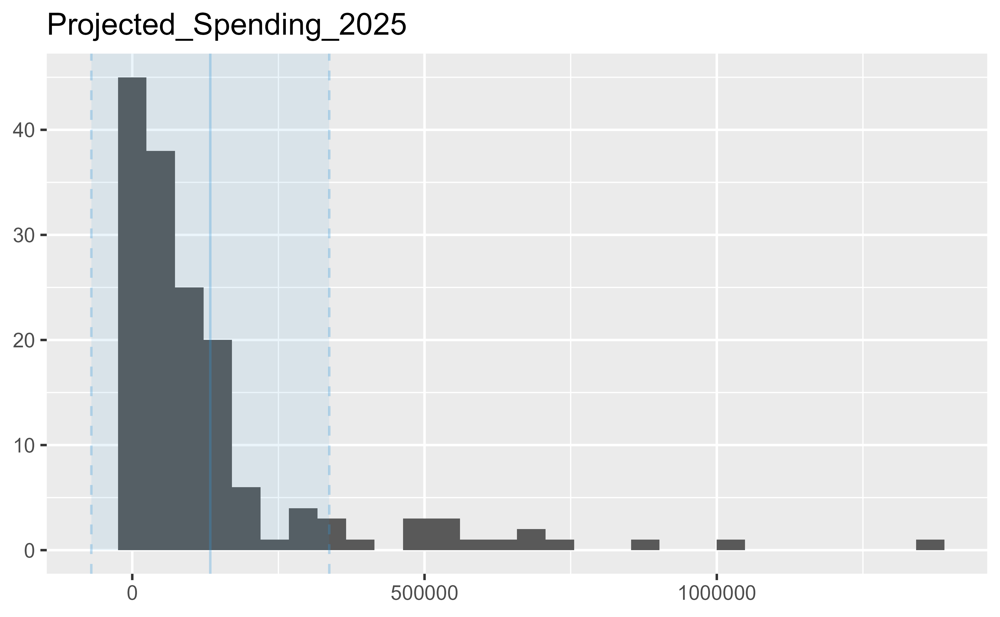
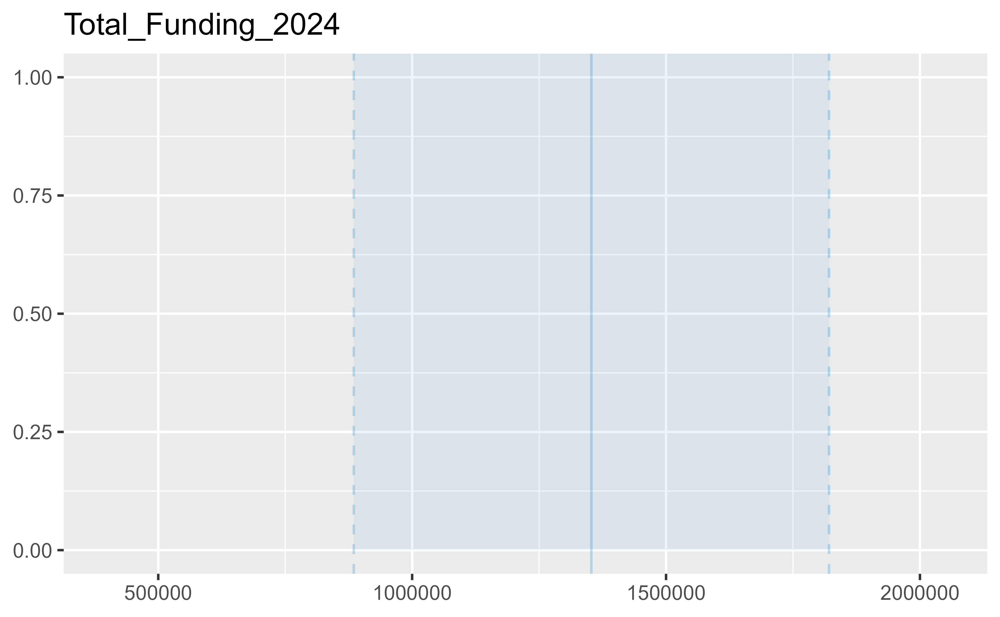

[ROWS] 206
[FIELDS] 10
[MODIFIED] 2025-03-18
[PERIODICITY] Annually [R/P1Y]
[TEMPORAL] 2024-01-01 • 2025-12-31
[DICTIONARY] https://data.cms.gov/resources/advance-investment-payment-spend-plan-data-dictionary
[SITE] https://data.cms.gov/medicare-shared-savings-program/advance-investment-payment-spend-plan
[REFERENCES] https://data.cms.gov/resources/advance-investment-payment-spend-plan-methodology
[RESOURCES] https://data.cms.gov/data-api/v1/dataset-resources/a3d35ba1-3ff4-48dd-91b4-8e1f9e7a19b7
[DOWNLOAD] https://data.cms.gov/sites/default/files/2025-03/1d967a0a-cad3-4321-8f03-1288d493be49/Advance_Investment_Payment_Spend_PUF_March%202025.csv
12 ACO AIP Plan
The Advance Investment Payment Spend Plan data provides payment use, spending category, projected and actual spending of advanced investments payments by Accountable Care Organizations (ACOs).
Metadata
Resources
[CSV] 28.5K 2025 Advance Investment Payment Spend Plan
<https://data.cms.gov/sites/default/files/2025-03/1d967a0a-cad3-4321-8f03-1288d493be49/Advance_Investment_Payment_Spend_PUF_March%202025.csv>
[PDF] 191.7K 2025 Advance Investment Payment Spend Plan Methodology
<https://data.cms.gov/sites/default/files/2024-01/375dc435-b683-4ace-95f7-b4a60fd2a1b5/AIP_Methodology_508.pdf>
[PDF] 97.9K 2025 Advance Investment Payment Spend Plan Data Dictionary
<https://data.cms.gov/sites/default/files/2025-01/Advance%20Investment%20Payment%20Spend%20Plan%202025.pdf>
Dictionary
ACO_ID
Unencrypted ACO Identifier. This identifier
can be linked to the encrypted ACO identifier
used for prior performance years (PY)
using the ACO ID Crosswalk available at
https://www.cms.gov/Medicare/Medicare-Fee-for-ServicePayment/sharedsavingsprogram/program-data.
ACO_Name
ACO Doing Business As (DBA) or Legal Business Name
(LBN) if DBA is not available.
Payment_Use
ACO description of use of advance investment
payments.
General_Spend_Category
Payment usage category: increased staffing,
health care infrastructure, or the provision of
accountable care for underserved beneficiaries.
General_Spend_Subcategory
Selected general spend subcategory under a general
spend category payment use falls under.
Total_AIP_Funding_Received_through_December_2024
AIP funding ACO received from CMS through December
2024.
Projected_Spending_2024
Amount ACO estimates will be spent on payment use
during 2024 performance year.
Actual_Spending_2024
Amount ACO actually spent on payment use during
2024 performance year.
Projected_Spending_2025
Amount ACO estimates will be spent on payment use
during 2025 performance year.
Actual_Spending_2025
Amount ACO actually spent on payment use during
2025 performance year.
Data
$funding_2024
# A tibble: 19 × 3
ACO_ID ACO_Name Total_Funding_2024
,
# Actual_Spending_2024 , Projected_Spending_2025
$aip_2024
# A tibble: 68 × 7
ACO_ID ACO_Name Payment_Use General_Spend_Category General_Spend_Subcat…¹
, Actual_Spending_2024
$aip_2025
# A tibble: 150 × 6
ACO_ID ACO_Name Payment_Use General_Spend_Category General_Spend_Subcat…¹
Distribution
describe_distribution(res$aip_2024, by = "General_Spend_Category")General_Spend_Category
-----------------------------------------------------------
Health Care Infrastructure
Health Care Infrastructure
Increased Staffing
Increased Staffing
Provision of Accountable Care for Underserved Beneficiaries
Provision of Accountable Care for Underserved Beneficiaries
Variable | Mean | SD | IQR | Range
-------------------------------------------------------------------------------
Projected_Spending_2024 | 1.53e+05 | 2.72e+05 | 1.84e+05 | [3000.00, 1.35e+06]
Actual_Spending_2024 | 81070.64 | 1.20e+05 | 86737.00 | [210.00, 5.07e+05]
Projected_Spending_2024 | 2.91e+05 | 2.90e+05 | 4.43e+05 | [20000.00, 1.28e+06]
Actual_Spending_2024 | 4.56e+05 | 5.70e+05 | 7.92e+05 | [6300.00, 1.74e+06]
Projected_Spending_2024 | 6.12e+05 | | 0.00 | [6.12e+05, 6.12e+05]
Actual_Spending_2024 | 3.80e+05 | | 0.00 | [3.80e+05, 3.80e+05]
Variable | Skewness | Kurtosis | n | n_Missing
--------------------------------------------------------------
Projected_Spending_2024 | 3.97 | 17.60 | 24 | 10
Actual_Spending_2024 | 2.62 | 7.09 | 34 | 0
Projected_Spending_2024 | 1.64 | 3.62 | 28 | 5
Actual_Spending_2024 | 1.25 | -0.08 | 33 | 0
Projected_Spending_2024 | | | 1 | 0
Actual_Spending_2024 | | | 1 | 0
describe_distribution(res$aip_2025, by = "General_Spend_Category")General_Spend_Category
-----------------------------------------------------------
Health Care Infrastructure
Increased Staffing
Provision of Accountable Care for Underserved Beneficiaries
Variable | Mean | SD | IQR | Range
------------------------------------------------------------------------------
Projected_Spending_2025 | 96625.73 | 1.83e+05 | 1.03e+05 | [548.00, 1.34e+06]
Projected_Spending_2025 | 1.87e+05 | 2.26e+05 | 1.47e+05 | [7875.00, 1.04e+06]
Projected_Spending_2025 | 73351.87 | 99035.29 | 70065.60 | [312.00, 3.25e+05]
Variable | Skewness | Kurtosis | n | n_Missing
--------------------------------------------------------------
Projected_Spending_2025 | 5.26 | 33.44 | 67 | 0
Projected_Spending_2025 | 1.89 | 3.11 | 74 | 0
Projected_Spending_2025 | 2.48 | 6.77 | 9 | 0
describe_distribution(res$funding_2024)Variable | Mean | SD | IQR | Range
------------------------------------------------------------------------
Total_Funding_2024 | 1.35e+06 | 4.68e+05 | 563778 | [3.97e+05, 2.05e+06]
Variable | Skewness | Kurtosis | n | n_Missing
---------------------------------------------------------
Total_Funding_2024 | -0.52 | -0.22 | 19 | 0


